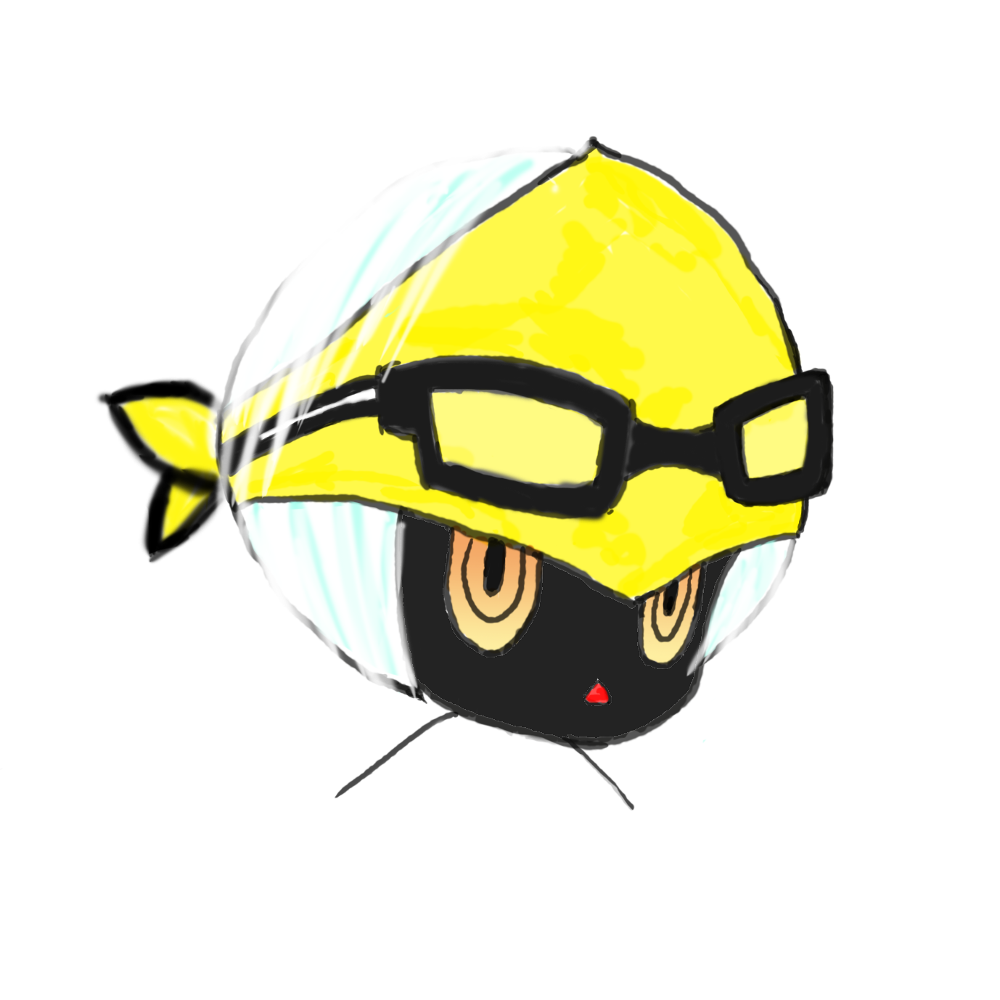

国籍： 台湾
趣味： ゲーム、アニメ、マンガ
特技： 合気道
学歴：
大学 情報工学 卒業
大学院 コンピューター通信 卒業
ゲーム専門学校 在学中
職歴：
ゲーム会社：担当 アイテムシステム、ダンジョンシステム
工具機会社：担当 金属加工シミュレーションシステム、電流監視システム
志願： ゲームプログラマー
自己紹介： ファンタジーが大好きで、それを実現できるゲームをただの遊びとは思っていません。ゲームの素晴らしさをみんなに理解したく、よりリアル的なもの、現実世界にないもの、ゲームの世界に感動されるものを目指しています。